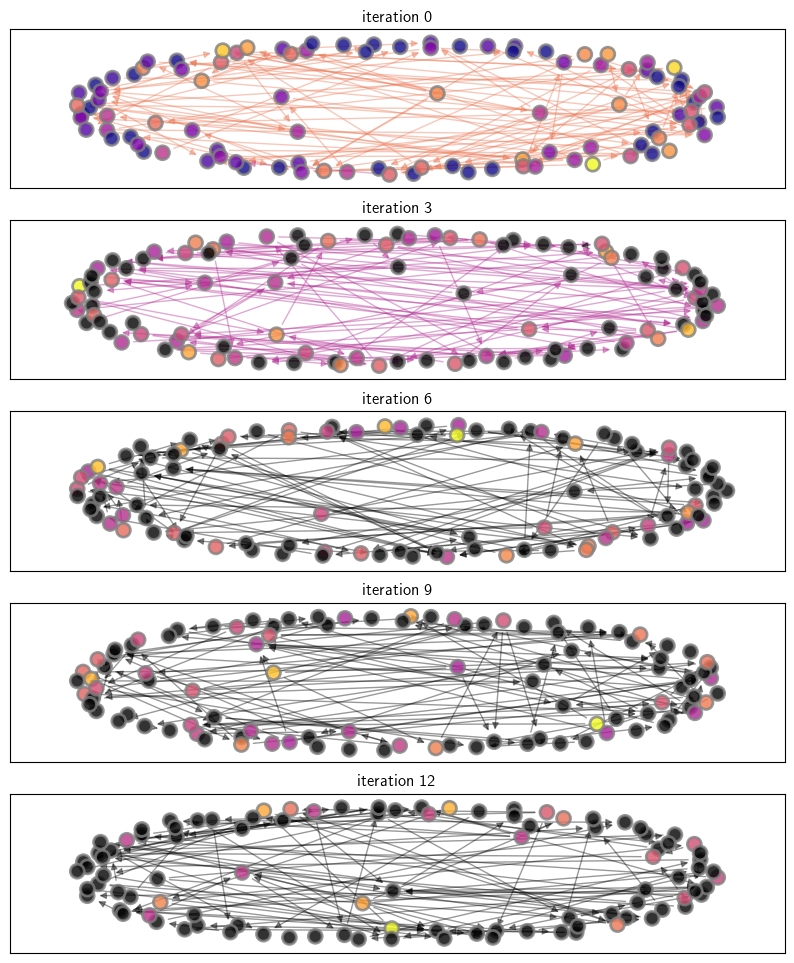

Chapter 5 - Nonlinear Interactions (Python Code)#
! pip install --upgrade quantecon_book_networks
Show code cell output
Collecting quantecon_book_networks
Obtaining dependency information for quantecon_book_networks from https://files.pythonhosted.org/packages/29/6e/3eaac581e7cf7b71e4b20ad018c035e602891cf16ab373a57859f4495cf6/quantecon_book_networks-1.1-py2.py3-none-any.whl.metadata
Downloading quantecon_book_networks-1.1-py2.py3-none-any.whl.metadata (1.3 kB)
Requirement already satisfied: numpy in /usr/share/miniconda3/envs/networks/lib/python3.11/site-packages (from quantecon_book_networks) (1.24.3)
Requirement already satisfied: scipy in /usr/share/miniconda3/envs/networks/lib/python3.11/site-packages (from quantecon_book_networks) (1.11.1)
Requirement already satisfied: pandas in /usr/share/miniconda3/envs/networks/lib/python3.11/site-packages (from quantecon_book_networks) (2.0.3)
Requirement already satisfied: matplotlib in /usr/share/miniconda3/envs/networks/lib/python3.11/site-packages (from quantecon_book_networks) (3.7.2)
Collecting pandas-datareader (from quantecon_book_networks)
Downloading pandas_datareader-0.10.0-py3-none-any.whl (109 kB)
?25l ━━━━━━━━━━━━━━━━━━━━━━━━━━━━━━━━━━━━━━━━ 0.0/109.5 kB ? eta -:--:--
━━━━━━━━━━━━━━━━━━━━━━━━━━━━━━━━━━━━━━━ 109.5/109.5 kB 4.3 MB/s eta 0:00:00
?25hRequirement already satisfied: networkx in /usr/share/miniconda3/envs/networks/lib/python3.11/site-packages (from quantecon_book_networks) (3.1)
Collecting quantecon (from quantecon_book_networks)
Obtaining dependency information for quantecon from https://files.pythonhosted.org/packages/33/ea/e64e1be90daf370f5b190ceb298b9ac92105b3672775dce77acde8ccf603/quantecon-0.7.1-py3-none-any.whl.metadata
Downloading quantecon-0.7.1-py3-none-any.whl.metadata (4.0 kB)
Collecting POT (from quantecon_book_networks)
Obtaining dependency information for POT from https://files.pythonhosted.org/packages/66/62/e6107249236383a5e6c015bf2ec13b2b8e1c4abeb59a2915f754c2182990/POT-0.9.3-cp311-cp311-manylinux_2_17_x86_64.manylinux2014_x86_64.whl.metadata
Downloading POT-0.9.3-cp311-cp311-manylinux_2_17_x86_64.manylinux2014_x86_64.whl.metadata (30 kB)
Requirement already satisfied: contourpy>=1.0.1 in /usr/share/miniconda3/envs/networks/lib/python3.11/site-packages (from matplotlib->quantecon_book_networks) (1.0.5)
Requirement already satisfied: cycler>=0.10 in /usr/share/miniconda3/envs/networks/lib/python3.11/site-packages (from matplotlib->quantecon_book_networks) (0.11.0)
Requirement already satisfied: fonttools>=4.22.0 in /usr/share/miniconda3/envs/networks/lib/python3.11/site-packages (from matplotlib->quantecon_book_networks) (4.25.0)
Requirement already satisfied: kiwisolver>=1.0.1 in /usr/share/miniconda3/envs/networks/lib/python3.11/site-packages (from matplotlib->quantecon_book_networks) (1.4.4)
Requirement already satisfied: packaging>=20.0 in /usr/share/miniconda3/envs/networks/lib/python3.11/site-packages (from matplotlib->quantecon_book_networks) (23.1)
Requirement already satisfied: pillow>=6.2.0 in /usr/share/miniconda3/envs/networks/lib/python3.11/site-packages (from matplotlib->quantecon_book_networks) (9.4.0)
Requirement already satisfied: pyparsing<3.1,>=2.3.1 in /usr/share/miniconda3/envs/networks/lib/python3.11/site-packages (from matplotlib->quantecon_book_networks) (3.0.9)
Requirement already satisfied: python-dateutil>=2.7 in /usr/share/miniconda3/envs/networks/lib/python3.11/site-packages (from matplotlib->quantecon_book_networks) (2.8.2)
Requirement already satisfied: pytz>=2020.1 in /usr/share/miniconda3/envs/networks/lib/python3.11/site-packages (from pandas->quantecon_book_networks) (2023.3.post1)
Requirement already satisfied: tzdata>=2022.1 in /usr/share/miniconda3/envs/networks/lib/python3.11/site-packages (from pandas->quantecon_book_networks) (2023.3)
Requirement already satisfied: lxml in /usr/share/miniconda3/envs/networks/lib/python3.11/site-packages (from pandas-datareader->quantecon_book_networks) (4.9.3)
Requirement already satisfied: requests>=2.19.0 in /usr/share/miniconda3/envs/networks/lib/python3.11/site-packages (from pandas-datareader->quantecon_book_networks) (2.31.0)
Requirement already satisfied: numba>=0.49.0 in /usr/share/miniconda3/envs/networks/lib/python3.11/site-packages (from quantecon->quantecon_book_networks) (0.57.1)
Requirement already satisfied: sympy in /usr/share/miniconda3/envs/networks/lib/python3.11/site-packages (from quantecon->quantecon_book_networks) (1.11.1)
Requirement already satisfied: llvmlite<0.41,>=0.40.0dev0 in /usr/share/miniconda3/envs/networks/lib/python3.11/site-packages (from numba>=0.49.0->quantecon->quantecon_book_networks) (0.40.0)
Requirement already satisfied: six>=1.5 in /usr/share/miniconda3/envs/networks/lib/python3.11/site-packages (from python-dateutil>=2.7->matplotlib->quantecon_book_networks) (1.16.0)
Requirement already satisfied: charset-normalizer<4,>=2 in /usr/share/miniconda3/envs/networks/lib/python3.11/site-packages (from requests>=2.19.0->pandas-datareader->quantecon_book_networks) (2.0.4)
Requirement already satisfied: idna<4,>=2.5 in /usr/share/miniconda3/envs/networks/lib/python3.11/site-packages (from requests>=2.19.0->pandas-datareader->quantecon_book_networks) (3.4)
Requirement already satisfied: urllib3<3,>=1.21.1 in /usr/share/miniconda3/envs/networks/lib/python3.11/site-packages (from requests>=2.19.0->pandas-datareader->quantecon_book_networks) (1.26.16)
Requirement already satisfied: certifi>=2017.4.17 in /usr/share/miniconda3/envs/networks/lib/python3.11/site-packages (from requests>=2.19.0->pandas-datareader->quantecon_book_networks) (2023.7.22)
Requirement already satisfied: mpmath>=0.19 in /usr/share/miniconda3/envs/networks/lib/python3.11/site-packages (from sympy->quantecon->quantecon_book_networks) (1.3.0)
Downloading quantecon_book_networks-1.1-py2.py3-none-any.whl (364 kB)
?25l ━━━━━━━━━━━━━━━━━━━━━━━━━━━━━━━━━━━━━━━━ 0.0/364.8 kB ? eta -:--:--
━━━━━━━━━━━━━━━━━━━━━━━━━━━━━━━━━━━━━━━╺ 358.4/364.8 kB 24.6 MB/s eta 0:00:01
━━━━━━━━━━━━━━━━━━━━━━━━━━━━━━━━━━━━━━━━ 364.8/364.8 kB 8.8 MB/s eta 0:00:00
?25h
Downloading POT-0.9.3-cp311-cp311-manylinux_2_17_x86_64.manylinux2014_x86_64.whl (858 kB)
?25l ━━━━━━━━━━━━━━━━━━━━━━━━━━━━━━━━━━━━━━━━ 0.0/858.2 kB ? eta -:--:--
━━━━━━━━━━━━━━━━━━━━━━━━━━━━━━━━━━━━━━━━ 858.2/858.2 kB 46.6 MB/s eta 0:00:00
?25hDownloading quantecon-0.7.1-py3-none-any.whl (214 kB)
?25l ━━━━━━━━━━━━━━━━━━━━━━━━━━━━━━━━━━━━━━━━ 0.0/214.8 kB ? eta -:--:--
━━━━━━━━━━━━━━━━━━━━━━━━━━━━━━━━━━━━━━━━ 214.8/214.8 kB 57.2 MB/s eta 0:00:00
?25h
Installing collected packages: quantecon, POT, pandas-datareader, quantecon_book_networks
Successfully installed POT-0.9.3 pandas-datareader-0.10.0 quantecon-0.7.1 quantecon_book_networks-1.1
We begin with some imports
import quantecon as qe
import quantecon_book_networks
import quantecon_book_networks.input_output as qbn_io
import quantecon_book_networks.plotting as qbn_plt
import quantecon_book_networks.data as qbn_data
export_figures = False
import numpy as np
import networkx as nx
import matplotlib.pyplot as plt
from matplotlib import cm
quantecon_book_networks.config("matplotlib")
Financial Networks#
Equity-Cross Holdings#
Here we define a class for modelling a financial network where firms are linked by share cross-holdings, and there are failure costs as described by Elliott et al. (2014).
class FinNet:
def __init__(self, n=100, c=0.72, d=1, θ=0.5, β=1.0, seed=1234):
self.n, self.c, self.d, self.θ, self.β = n, c, d, θ, β
np.random.seed(seed)
self.e = np.ones(n)
self.C, self.C_hat = self.generate_primitives()
self.A = self.C_hat @ np.linalg.inv(np.identity(n) - self.C)
self.v_bar = self.A @ self.e
self.t = np.full(n, θ)
def generate_primitives(self):
n, c, d = self.n, self.c, self.d
B = np.zeros((n, n))
C = np.zeros_like(B)
for i in range(n):
for j in range(n):
if i != j and np.random.rand() < d/(n-1):
B[i,j] = 1
for i in range(n):
for j in range(n):
k = np.sum(B[:,j])
if k > 0:
C[i,j] = c * B[i,j] / k
C_hat = np.identity(n) * (1 - c)
return C, C_hat
def T(self, v):
Tv = self.A @ (self.e - self.β * np.where(v < self.t, 1, 0))
return Tv
def compute_equilibrium(self):
i = 0
v = self.v_bar
error = 1
while error > 1e-10:
print(f"number of failing firms is ", np.sum(v < self.θ))
new_v = self.T(v)
error = np.max(np.abs(new_v - v))
v = new_v
i = i+1
print(f"Terminated after {i} iterations")
return v
def map_values_to_colors(self, v, j):
cols = cm.plasma(qbn_io.to_zero_one(v))
if j != 0:
for i in range(len(v)):
if v[i] < self.t[i]:
cols[i] = 0.0
return cols
Now we create a financial network.
fn = FinNet(n=100, c=0.72, d=1, θ=0.3, β=1.0)
And compute its equilibrium.
fn.compute_equilibrium()
number of failing firms is 31
number of failing firms is 42
number of failing firms is 49
number of failing firms is 52
number of failing firms is 55
number of failing firms is 57
number of failing firms is 59
number of failing firms is 62
number of failing firms is 64
number of failing firms is 66
number of failing firms is 69
number of failing firms is 77
number of failing firms is 81
number of failing firms is 86
number of failing firms is 93
number of failing firms is 97
number of failing firms is 99
number of failing firms is 100
number of failing firms is 100
Terminated after 19 iterations
array([0., 0., 0., 0., 0., 0., 0., 0., 0., 0., 0., 0., 0., 0., 0., 0., 0.,
0., 0., 0., 0., 0., 0., 0., 0., 0., 0., 0., 0., 0., 0., 0., 0., 0.,
0., 0., 0., 0., 0., 0., 0., 0., 0., 0., 0., 0., 0., 0., 0., 0., 0.,
0., 0., 0., 0., 0., 0., 0., 0., 0., 0., 0., 0., 0., 0., 0., 0., 0.,
0., 0., 0., 0., 0., 0., 0., 0., 0., 0., 0., 0., 0., 0., 0., 0., 0.,
0., 0., 0., 0., 0., 0., 0., 0., 0., 0., 0., 0., 0., 0., 0.])
Waves of bankruptcies in a financial network#
Now we visualise the network after different numbers of iterations.
For convenience we will first define a function to plot the graphs of the financial network.
def plot_fin_graph(G, ax, node_color_list):
n = G.number_of_nodes()
node_pos_dict = nx.spring_layout(G, k=1.1)
edge_colors = []
for i in range(n):
for j in range(n):
edge_colors.append(node_color_list[i])
nx.draw_networkx_nodes(G,
node_pos_dict,
node_color=node_color_list,
edgecolors='grey',
node_size=100,
linewidths=2,
alpha=0.8,
ax=ax)
nx.draw_networkx_edges(G,
node_pos_dict,
edge_color=edge_colors,
alpha=0.4,
ax=ax)
Now we will iterate by applying the operator \(T\) to the vector of firm values \(v\) and produce the plots.
G = nx.from_numpy_array(np.array(fn.C), create_using=nx.DiGraph)
v = fn.v_bar
k = 15
d = 3
fig, axes = plt.subplots(int(k/d), 1, figsize=(10, 12))
for i in range(k):
if i % d == 0:
ax = axes[int(i/d)]
ax.set_title(f"iteration {i}")
plot_fin_graph(G, ax, fn.map_values_to_colors(v, i))
v = fn.T(v)
if export_figures:
plt.savefig("figures/fin_network_sims_1.pdf")
plt.show()
